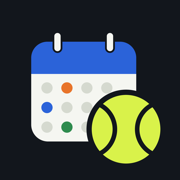

Tenis TakvimimDestek
Bir sorun mu var ya da bir önerin mi? kmertcansdev@gmail.com adresine yaz.
Sık sorulanlar
Hesap açmam gerekiyor mu?
Hayır. Uygulama e-posta ya da telefon istemez. Ortak takımı kullanırsan telefonuna özel anonim bir hesap kendiliğinden oluşturulur.
Takımıma nasıl katılırım?
Kaptanının gönderdiği davet linkine dokun ve Uygulamada aç ve katıl’a bas. Link açılmazsa uygulamada Kulüpler → Ortak takım → Takıma katıl’a takım kodunu (ör. CAN-1234) yaz.
Takımımı nasıl paylaşırım?
Kulüpler → Ortak takım’da takımını kur; davet linkini WhatsApp ya da istediğin yerden takım arkadaşlarına gönder. Maçları kaptan ve kaptanın yönetici yaptığı kişiler ekleyip düzenleyebilir.
Davet linki “uygulamada aç” deyince bir şey olmuyor
Uygulama telefonunda kurulu değilse link açılamaz. Önce uygulamayı kur, sonra linke tekrar dokun ya da kodu elle yaz.
Hatırlatma gelmedi
Ayarlar → Bildirimler → Tenis Takvimim’de bildirimlerin açık olduğundan emin ol. Odak ya da Rahatsız Etme modu açıksa hatırlatmalar sessiz gelebilir. Hatırlatmalar yalnızca senin kurduğun listeye göre zamanlanır; uygulamadaki hatırlatma ayarlarını da kontrol et.
Telefon değiştirdim, maçlarım gitti
Kendi takvimin yalnızca eski telefonunda tutulur, yeni telefona taşınmaz. Ortak takımdaki maçlar ise sunucuda durur: yeni telefonda takım koduyla yeniden katıldığında geri gelir. Kaptansan, takımın yeni telefonda da yönetilebilmesi için başka bir üyeyi yönetici yapmanı öneririz.
Takımdan nasıl ayrılırım?
Kulüpler → Ortak takım → Takımdan ayrıl. Kaptansan bu düğme Takımı sil olarak görünür ve ortak takvimi herkes için kapatır. İki durumda da şimdiye kadarki maçlar telefonunda kişisel maç olarak kalır.
Verilerimi nasıl silerim?
Telefondaki veriler uygulamayı silince gider. Sunucudaki ortak takım verilerinin silinmesi için bize yaz; ayrıntılar Gizlilik Politikası’nda.